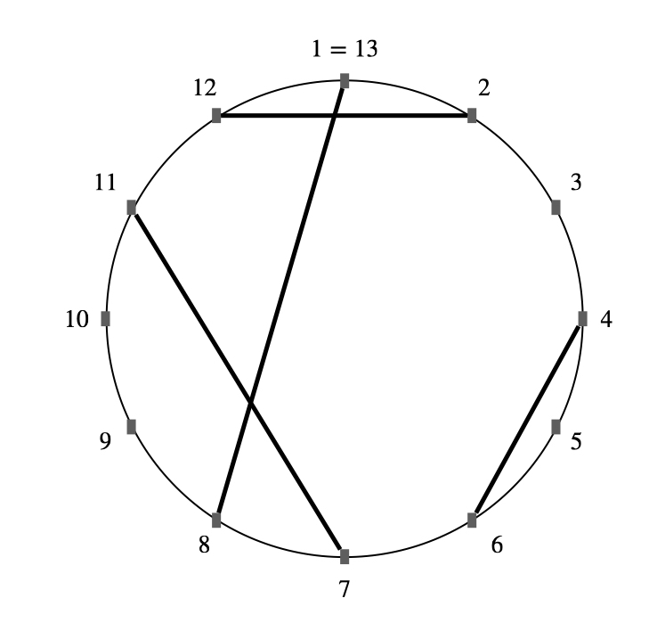
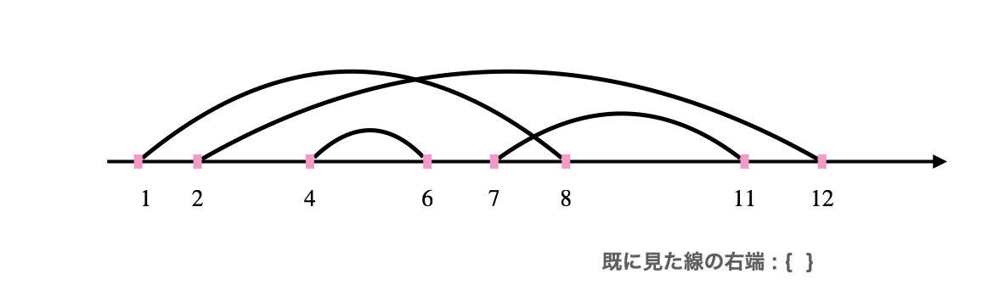
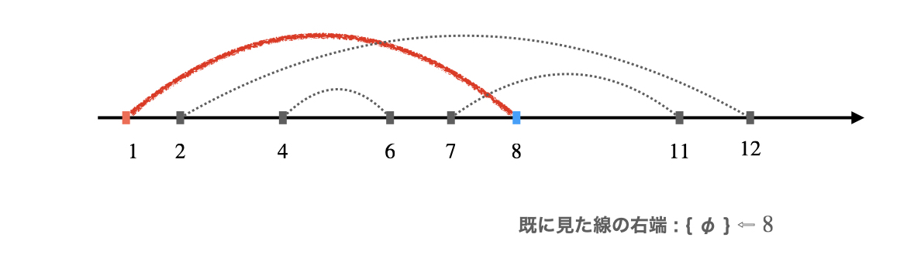
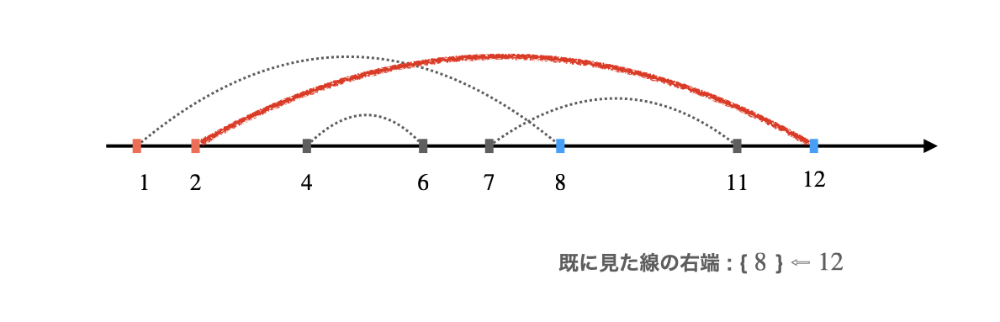
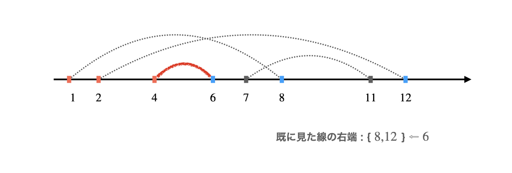
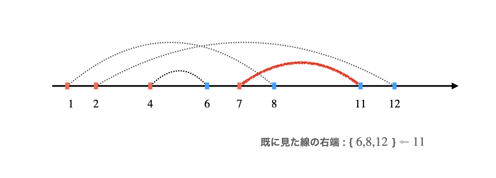
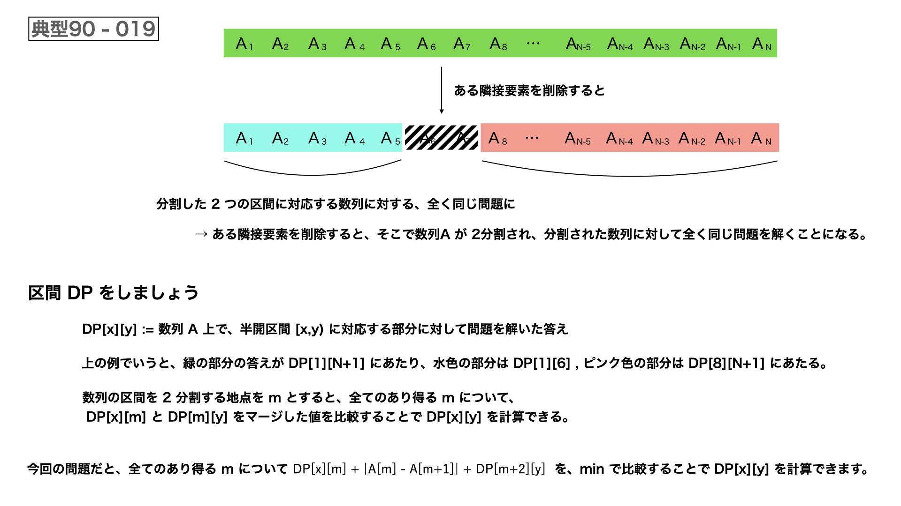

F(x) : 1 ~ N の整数から、どの 2 つの差の絶対値も x 以上であるようにいくつか取り出す方法の総数
各 1 ≦ x ≦ N について、F(x) mod 1000000007 を計算してください。
・N ≦ 100000
int main(){
int n;cin >> n;
ll mod = 1000000007;
ModComb M(1000000,mod);
M.COMinit();
FOR(k,1,n+1){
long long res = 0;
FOR(a , 1 , n+1){
ll p = n-a-(a-1)*(k-1) + a;
if(p < 0)break;
res += M.COM(p,a);
}
cout << res%mod << endl;
}
return 0;
円上で時計回りに 1 , 2 , ... , N と等間隔に並んだ N 個の点と、それらを結ぶ線分が M 本ある。
端点以外で線分同士が交差する交点の個数を出力せよ。






int main(){
ll n , m;cin >> n >> m;
SplayTree<int> S;
REP(i,n+1)S.push_back(0);
vector<vll> segment(n+1);// [x] := 点 x に左端点がある線分の右端の位置の一覧
REP(i,m){
int left , right;cin >> left >> right;
if(left>right)swap(left,right);
segment[left].push_back(right); // 線分を 1 始まりの数直線上の区間と捉える
}
ll ans = 0;
// 円を点 1 から始まる数直線と捉える
FOR(left,1,n+1){
for(int right : segment[left])if(left + 1 < right)ans += S.RangeSumQuery(left+1,right);// 区間内の右端の個数をカウント
for(int right : segment[left])S.update_val(right,S[right].Value+1);// 右端をメモ
}
cout << ans << endl;
return 0;
長さ N の 数列 A に対して、A が空になるまで以下の操作を繰り返す。
・A の要素のうち、連続する 2 つの要素を選び、A から削除する。削除された要素以外の並び順は変わらない。
この操作におけるコストを、選んだ要素の値の差の絶対値とする。
各操作で好きな隣接要素を選べる時、操作を完了するためのコストの総和としての最小値を答えでください。
\(A\) のどの区間に注目しても、考える問題は同じです。
